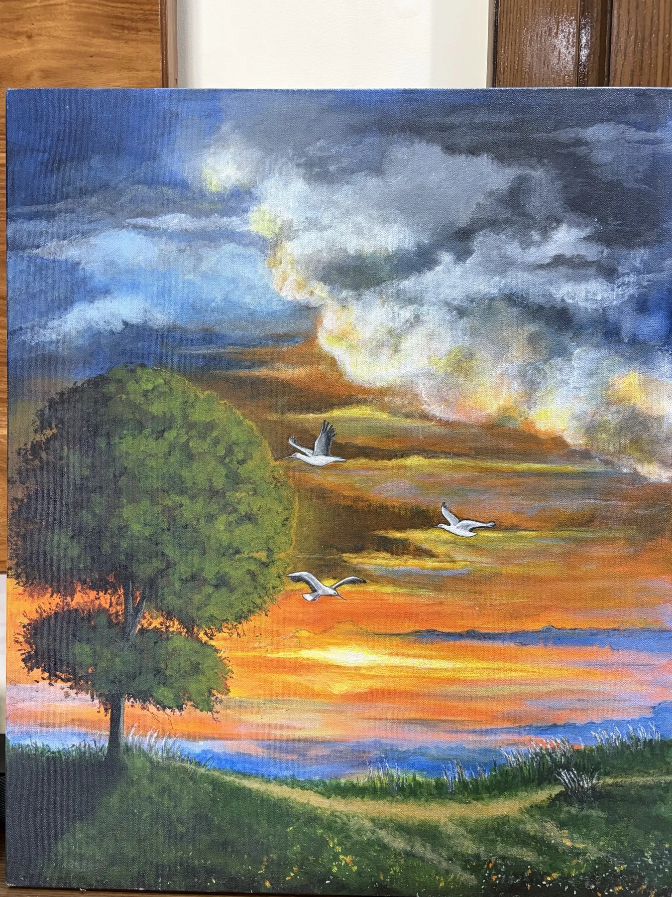

Landscape · Atmosphere
The Solitary Tree
A lone tree stands between earth and an expansive, changing sky. Birds scatter across the horizon while warm light gathers at the edge of day—a meditation on endurance, distance and quiet renewal.
From the landscape studies